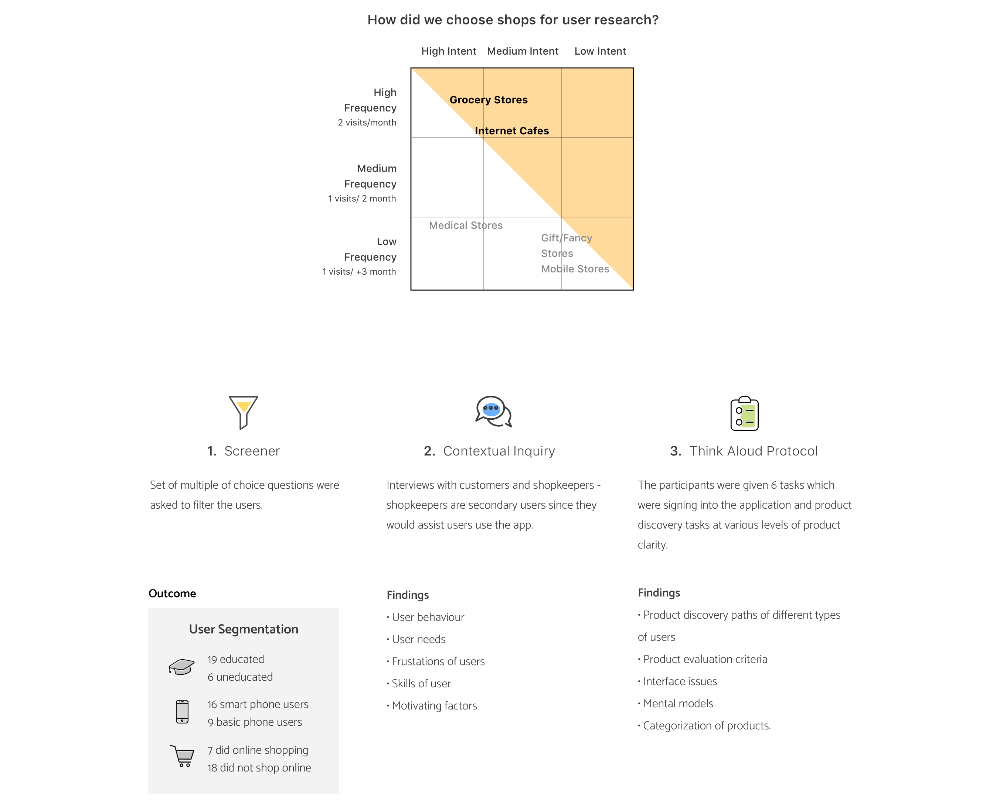
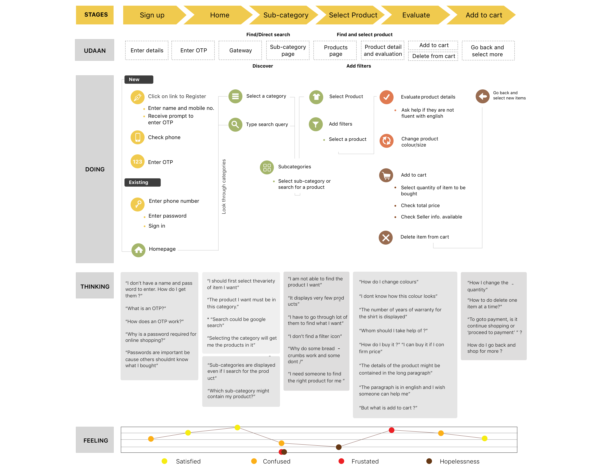

Invisible Computing.
UX Design Intern responsible for designing the assisted shopping experience for Amazon India
Worked with the New Initiatives Team (marketing + tech team) at Amazon India to design workflows for the Amazon Easy (code named 'UDAAN') tablet app, to assist with UX startegy and Interaction Design for the core flows. Due to an NDA, the mockups of the application aren't displayed.
Duration: May 2015 - July 2015
Manager: Mr. Zahid Khan, Marketing Head, New Initiatives Team.

Amazon reinvents itself to win in Rural India
The mission of the product is to enable everybody in India to buy from Amazon. Hundreds of millions of users face transaction barriers due to sketchy internet, language, access, education and payment methods. Amazon Easy also aims to bridge the trust gap as the customers rely on a fully-assisted shopping model.
Amazon Easy is a service that will place tablet devices loaded with the Amazon Easy app at the brick and mortar stores/points in tier 3+ towns in India. The customers walking into the store will order products through the tablet and pick them up from the store once delivered.
Process Overview

The product discovery and evaluation experiences
The product discovery and product evaluation flows are largely consumer driven and tend to be the primary flows to increase conversion in. In order to know the state of art, I conducted a competitve analysis of the product discovery and product evaluation paths, features involved and UI standards of similar e-commerce sites.

Rural India and e-commerce
In order to understand how rural India perceives and uses e-commerce, I went to two villages in India. I used contextual enquiries and think aloud protocols to understand the background of buyers and shopkeepers, mental models and needs. The think aloud protocols with the initial pilot prototype helped me observe familiarity with interface elements, understand customer paths with different levels of purchasing clarity. In order to test flows that weren't a part of the pilot product, paper prototypes were used.
The User
The primary user is the customer who walks into the brick and mortar store and the secondary user is the shopkeeper who operates the store alogn with guiding the customer with the Amazon Easy App.

The Customer Journey
The customer experiences several frustrations and needs as he goes through the app. The experience map below illustrates the major points -
Redesigned Task Flows
Based on themes that emerged from affinity mapping, I ideated on new and changed product features. Certain flows were changed depending on mental models of users and their capabilties.

The Final Design
I presented the research findings and new task flows to product managers and went through a round of critique and feedback.
Wireframes and high fidelity clickable wireframes were made. Based on expert review and feedback from managers, I made changes in every successive iteration. I delivered a full UX specification document with wireframes and mock-ups. I also delievered a research findings document to be shared among various teams working towards this goal. No final product details or names are included here due to a Non-Disclosure Agreement.
What was amazing?
I learned the User Centered Design methodology followed at Amazon, that I find useful to refer back to in my work. I learned working directly, and communicating seamlessly with developers. I learned periodic work presentation for critique sessions. The biggest challenge for the project was gaining access to users for contextual interviews. I was guided by an amazing manager, who taught me a great deal about the product based industry and data analysis techniques.